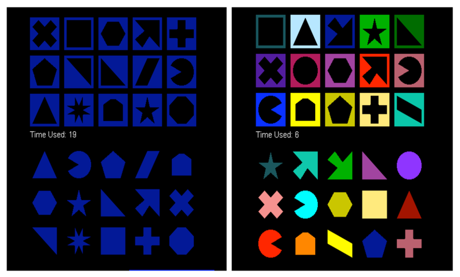
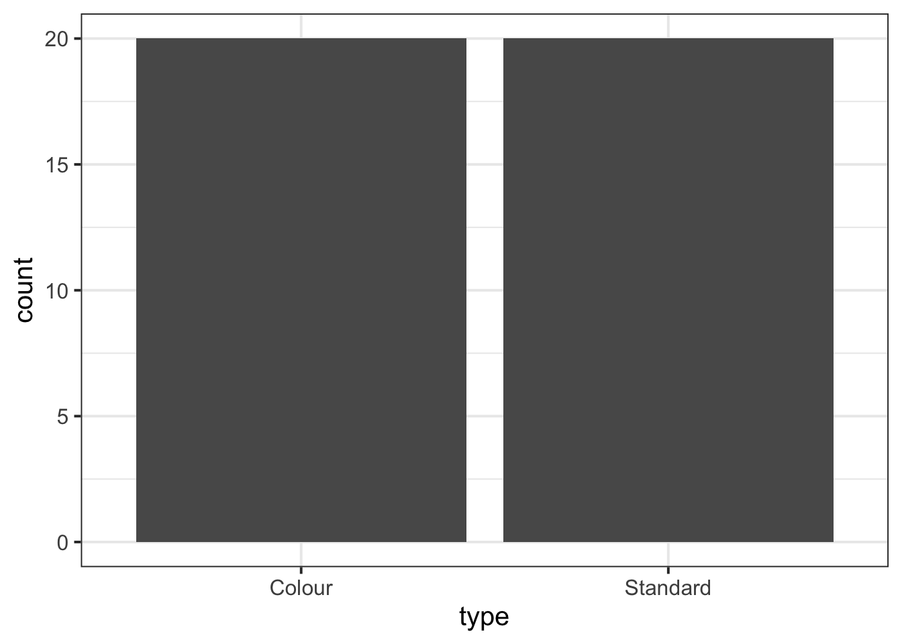
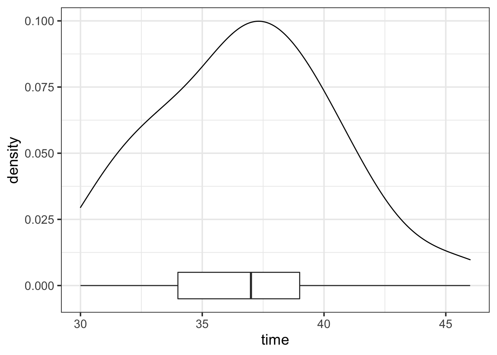
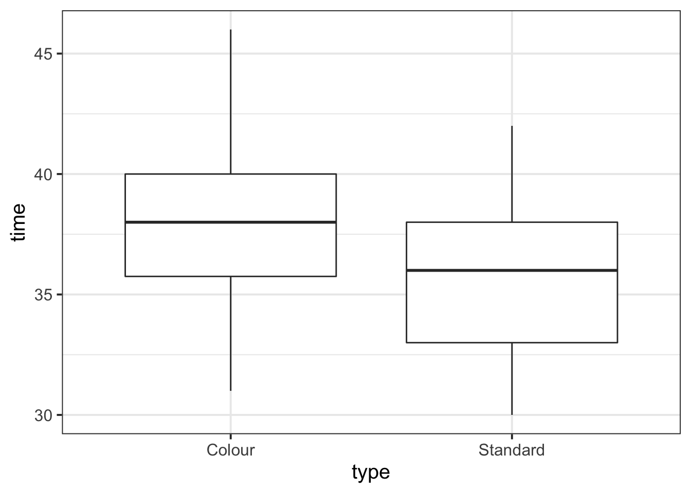
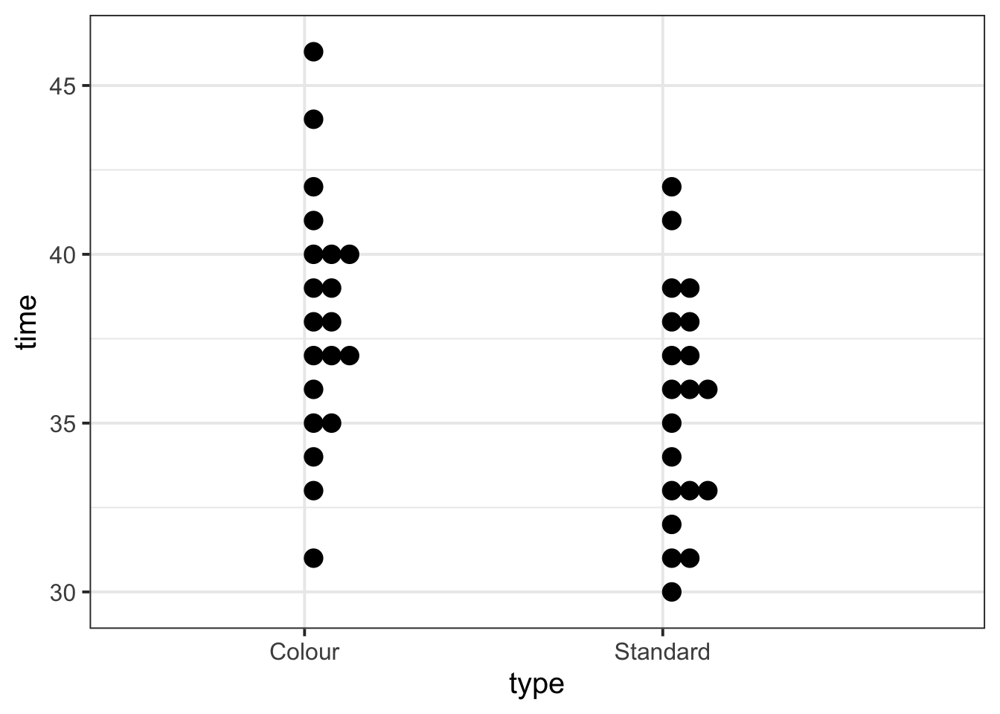
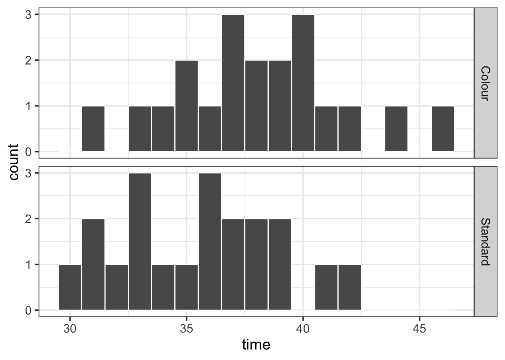
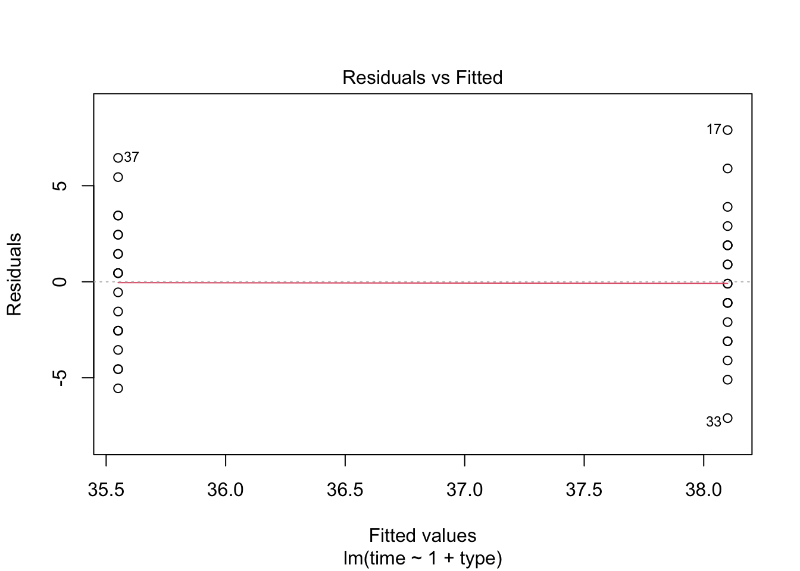
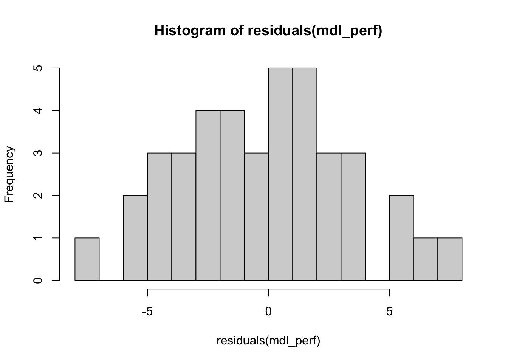
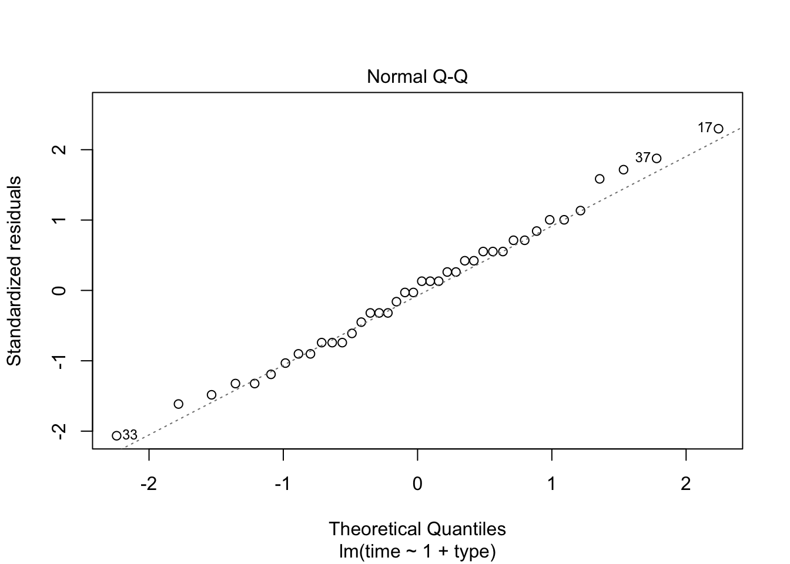
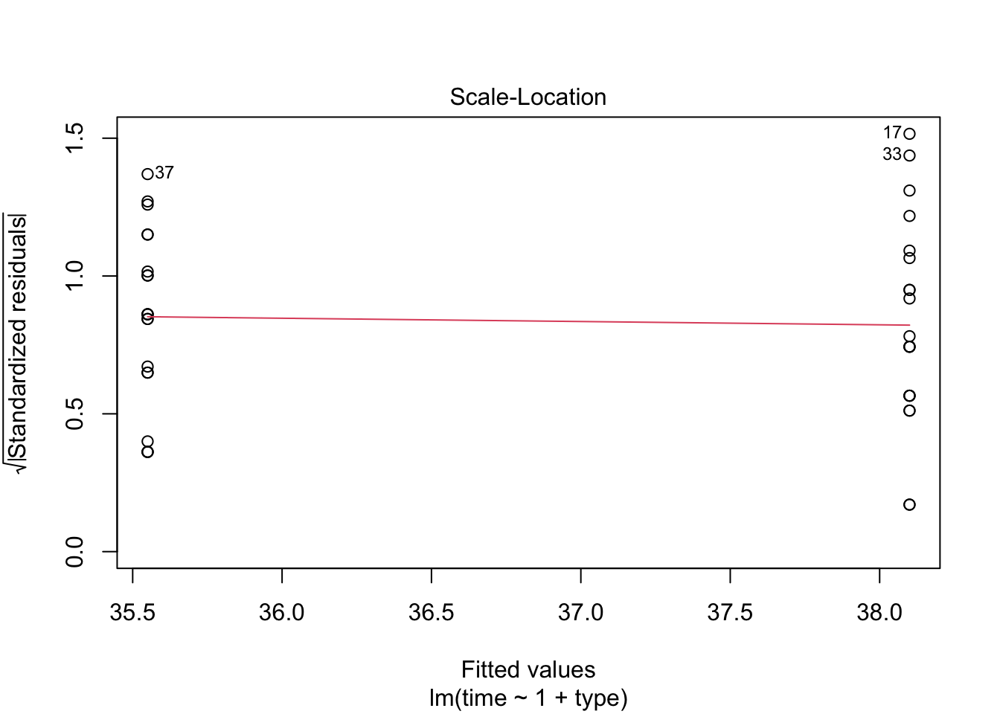

Categorical predictors and assumptions
LEARNING OBJECTIVES
- Understand the meaning of model coefficients in the case of a binary predictor.
- Be able to state the assumptions underlying a linear model.
- Understand how to assess if a fitted model satisfies the linear model assumptions.
- Understand how to use transformations when the model violates assumptions.
Research question
Do distracting colours influence reaction times?
A group of students wanted to answer the above research question. To do so, they designed a standard computerized game and a second version with distracting colours. Time to completion and game type was recorded for each study participant. See the data description below.
Download link
Description
A group of students wanted to investigate the impact of colour distracters on game-completion time. They hypothesized a slower completion time for those playing a game with distracting colours, as a consequence of the widely known Stroop effect (Stroop 1935).
Students created two computer versions of the Perfection game.1 In one version of the computerised game, the “standard” game type, all pegs and shapes would be of the same colour. In the other version of the game, the “colour” game type, pegs and shapes did not have matching colours, hence there was a colour distracter effect. The task was to click and drag each peg to the space with the matching shape.
They randomly recruited 40 students from the university. Half were randomly assigned to the standard game and the other half to the colour distracter version. All participants would play in similar conditions: same location and similar background noise to control for possible distractions.

Figure 1: Electronic Perfection game with and without colour distracters. The instructions for the game were to click and drag each peg to the space with the matching shape.
The following variables were collected:
student_id: Identifier for each studenttype: game type: Standard or Colourtime: time (in seconds) from the start of the game to completion
Preview
The first six rows of the data, provided by Kuiper and Sklar (2012), are:
| student_id | type | time |
|---|---|---|
| 1 | Standard | 38 |
| 2 | Colour | 36 |
| 3 | Colour | 42 |
| 4 | Standard | 35 |
| 5 | Standard | 32 |
| 6 | Colour | 37 |
Data exploration
Read the perfection data into R and name the data frame perfection.
Check for the correct encoding of all variables — that is, categorical variables should be factors and numeric variables should be numeric.
library(tidyverse)
perfection <- read_csv('https://uoepsy.github.io/data/perfection.csv')
head(perfection)## # A tibble: 6 x 3
## student_id type time
## <dbl> <chr> <dbl>
## 1 1 Standard 38
## 2 2 Colour 36
## 3 3 Colour 42
## 4 4 Standard 35
## 5 5 Standard 32
## 6 6 Colour 37Game type is a categorical variable but is encoded as a character (<chr>) variable rather than a factor.
Let’s fix it:
perfection <- perfection %>%
mutate(type = as.factor(type))
head(perfection)## # A tibble: 6 x 3
## student_id type time
## <dbl> <fct> <dbl>
## 1 1 Standard 38
## 2 2 Colour 36
## 3 3 Colour 42
## 4 4 Standard 35
## 5 5 Standard 32
## 6 6 Colour 37
Identify the units, the population to which conclusions can be generalised to, the explanatory variable and the response variable. Also classify the variables according to their type.
Is this study an experiment or an observational study?
Units: each student.
Population: set of all students at this university who would be willing to be part of the study.
Explanatory variable: type of game (standard or with a colour distracter). Type: categorical.
Response variable: the completion time (in seconds). Type: quantitative.
This study is an experiment, since students were randomly allocated to one of the two types of games.
Display and describe the marginal distribution of game type.
Type of game played is a categorical variable, hence we visualise it, for example, with a bar plot:
ggplot(perfection, aes(x = type)) +
geom_bar()
perfection %>%
group_by(type) %>%
summarise(n = n())## # A tibble: 2 x 2
## type n
## <fct> <int>
## 1 Colour 20
## 2 Standard 20The forty students were evenly split at random into either a colour distracter or standard game. Each group consisted of 20 students.
Display and describe the marginal distribution of completion times.
ggplot(perfection, aes(x = time)) +
geom_density() +
geom_boxplot(width = 1/100)
perfection %>%
summarise(M = mean(time),
SD = sd(time))## # A tibble: 1 x 2
## M SD
## <dbl> <dbl>
## 1 36.8 3.71The distribution completion times appears to be unimodal, centred at approximately 37 seconds, with a SD of roughly 4 seconds.
The boxplot does not highlight any outliers.
Display and describe the relationship between game type and completion times.
Does it look like the groups have equal mean or spread? Are there any extreme observations?
There are many correct way to investigate the distribution of completion times by group.
Option 1: Boxplots by group
ggplot(perfection, aes(x = type, y = time)) +
geom_boxplot()
Figure 2: Boxplots of competion times by game type.
Option 2: Dotplots by group
ggplot(perfection, aes(x = type, y = time)) +
geom_dotplot(binaxis = 'y')
Figure 3: Dotplots of competion times by game type.
Option 3: Histograms by group
ggplot(perfection, aes(x = time)) +
geom_histogram(binwidth = 1, color = 'white') +
facet_grid(rows = vars(type))
Figure 4: Histograms of competion times for each game type.
And many other options…
The summary statistics by group can be computed as follows:
stats_time <- perfection %>%
group_by(type) %>%
summarise(n = n(),
mean_time = mean(time),
sd_time = sd(time))
stats_time## # A tibble: 2 x 4
## type n mean_time sd_time
## <fct> <int> <dbl> <dbl>
## 1 Colour 20 38.1 3.65
## 2 Standard 20 35.6 3.39The summary statistics of completion time by group are as follows:
- Colour distracter group: \(n_1 = 20\), \(\bar y_1 = 38.10\), \(s_1 = 3.65\)
- Standard group: \(n_2 = 20\), \(\bar y_2 = 35.55\), \(s_2 = 3.39\)
We can write up these results as follows:
The dotplots of completion time by type of game played (Figure 3) show that the response distribution is fairly symmetric and bell-shaped in both groups. Furthermore, the spread (standard deviation) of the two distributions appears to be similar.
The boxplots in Figure 2 do not highlight any outliers. They suggest a higher mean completion time in the colour distracter group (\(\bar y_1 = 38.10\)s) than the standard group (\(\bar y_2 = 35.55\)s). The standard deviation of completion time in the colour distracter group (\(s_1 = 3.65\)s) is similar to that in the standard group (\(s_2 = 3.39\)s).
Model specification and fitting
The researchers hope to determine if distracting colours could impact response times when playing a computerised version of the Perfection game.
Write out in words and in symbols appropriate null and alternative hypothesis for the research question of interest.
Use a two-sided alternative.
Let \(\mu_1\) represent the true mean response time of the colour group and \(\mu_2\) the true mean response time of the standard group.
Null hypothesis: \(H_0: \mu_1 = \mu_2\) (the mean completion time for the colour distracter game is equal to the mean completion time for the standard game).
Alternative hypothesis: \(H_0: \mu_1 \neq \mu_2\) (the mean completion time for the colour distracter game is not equal to the mean completion time for the standard game).
Using the t.test() function, compute a statistical test against the null hypothesis specified above.
var.test(time ~ type, data = perfection)##
## F test to compare two variances
##
## data: time by type
## F = 1.1592, num df = 19, denom df = 19, p-value = 0.7508
## alternative hypothesis: true ratio of variances is not equal to 1
## 95 percent confidence interval:
## 0.4588131 2.9285830
## sample estimates:
## ratio of variances
## 1.159169t_res <- t.test(time ~ type, data = perfection, var.equal = TRUE)
t_res##
## Two Sample t-test
##
## data: time by type
## t = 2.2862, df = 38, p-value = 0.02791
## alternative hypothesis: true difference in means is not equal to 0
## 95 percent confidence interval:
## 0.2920254 4.8079746
## sample estimates:
## mean in group Colour mean in group Standard
## 38.10 35.55We performed a two-sample t-test against the null hypothesis of equal mean completion time for the colour distracter and standard games.
At the 5% significance level, the observed difference in mean completion time between the colour distracter and standard game is significantly different from 0 (\(t(38) = 2.29\), \(p = 0.028\), two-sided).
The sample data provide strong evidence that, on average, the time taken to complete the game with distracting colour is different from the standard game.
To comment on the magnitude of this observed difference in the population means we must resort to the confidence interval: \([0.29, 4.81]\).
We are 95% confident that participants taking the colour distracter game take between 0.29 and 4.81 seconds longer to complete the game, on average, than those taking the standard game.
Using the linear model function, lm(), fit the following linear model to the perfection data:
\[
Time = \beta_0 + \beta_1 \ Type + \epsilon
\]
Write down the equation of the fitted line.
mdl_perf <- lm(time ~ 1 + type, data = perfection)
summary(mdl_perf)##
## Call:
## lm(formula = time ~ 1 + type, data = perfection)
##
## Residuals:
## Min 1Q Median 3Q Max
## -7.100 -2.550 0.175 2.038 7.900
##
## Coefficients:
## Estimate Std. Error t value Pr(>|t|)
## (Intercept) 38.1000 0.7887 48.308 <2e-16 ***
## typeStandard -2.5500 1.1154 -2.286 0.0279 *
## ---
## Signif. codes: 0 '***' 0.001 '**' 0.01 '*' 0.05 '.' 0.1 ' ' 1
##
## Residual standard error: 3.527 on 38 degrees of freedom
## Multiple R-squared: 0.1209, Adjusted R-squared: 0.09778
## F-statistic: 5.227 on 1 and 38 DF, p-value: 0.02791The fitted model is: \[ \widehat{Time} = 38.1 - 2.55 \ Type \]
At the 5% significance level, are the regression coefficients significantly different from zero?
Is the model useful in explaining variability of completion times?
At the 5% significance level, both intercept and slope are significantly different from zero.
The F-statistic for model utility, in the case of simple linear regression, is simply the square t-statistic for the slope. The model involving game type as a predictor explains a significant amount of the variability in the response. That is, type of game played is a significant predictor of game completion time.
Do you notice any similarities between the t-test and the coefficients of the fitted linear model?
Consider the again the t.test() output and the lm() output:
t_res##
## Two Sample t-test
##
## data: time by type
## t = 2.2862, df = 38, p-value = 0.02791
## alternative hypothesis: true difference in means is not equal to 0
## 95 percent confidence interval:
## 0.2920254 4.8079746
## sample estimates:
## mean in group Colour mean in group Standard
## 38.10 35.55summary(mdl_perf)##
## Call:
## lm(formula = time ~ 1 + type, data = perfection)
##
## Residuals:
## Min 1Q Median 3Q Max
## -7.100 -2.550 0.175 2.038 7.900
##
## Coefficients:
## Estimate Std. Error t value Pr(>|t|)
## (Intercept) 38.1000 0.7887 48.308 <2e-16 ***
## typeStandard -2.5500 1.1154 -2.286 0.0279 *
## ---
## Signif. codes: 0 '***' 0.001 '**' 0.01 '*' 0.05 '.' 0.1 ' ' 1
##
## Residual standard error: 3.527 on 38 degrees of freedom
## Multiple R-squared: 0.1209, Adjusted R-squared: 0.09778
## F-statistic: 5.227 on 1 and 38 DF, p-value: 0.02791In the t-test, mean in group Colour = 38.10 corresponds to the estimate intercept of the linear model, \(\hat \beta_0 = 38.10\).
In the t-test, mean in group Standard = 35.55 corresponds to the estimated intercept plus slope in the linear model:
\[
\begin{matrix}
35.55 &=& 38.10 &-&2.55 \\
\bar y_2 &=& \hat \beta_0 &+& \hat \beta_1 \\
\bar y_2 &=& \bar y_1 &+& \hat \beta_1
\end{matrix}
\]
This means that \(x = 1\) for the standard group (group 2) and \(x = 0\) for the colour distracter group.
When dealing with a factor, R selects the first level in alphabetical order to be the reference level and \(\hat \beta_0\) predicts the group mean of the reference level.
To do so, R internally denotes the two groups by a binary indicator variable \(x\). It can take only two possible values: zero or one. When \(x=0\), we are dealing with the reference group, while when \(x = 1\) we are dealing with the other group.
The estimated slope \(\hat \beta_1\) represents the predicted difference in the means between the other group and the reference group.
Hence, testing if \(\mu_2 - \mu_1 = 0\) is equivalent to testing if \(\beta_1 = 0\).
This is clearer when exploring the predictions from the fitted model \(\hat y = \hat \beta_0 + \hat \beta_1 x\) for the possible values of \(x\): \[ \begin{aligned} x = 0: \qquad &\hat y = \hat \beta_0 + \hat \beta_1 \cdot 0 = \hat \beta_0\\ x = 1: \qquad &\hat y = \hat \beta_0 + \hat \beta_1 \cdot 1 = \hat \beta_0 + \hat \beta_1 \end{aligned} \]
The t-test statistic, and the lm() t-statistic are equivalent in absolute value.
The p-value is identical.
Furthermore, the lm() F-statistic, 5.227, is the square of t-statistic, and the p-value is also identical.
Interpret the intercept and slope of the fitted regression model.
Intercept
The estimated average completion time for those taking the colour distracter game is 38.10 seconds.
Slope
The estimated difference in average completion times between those taking the standard game and the colour distracter one is -2.55 seconds. As the difference is negative, the colour distracter group is has a higher estimated average completion time.
Equivalently, those taking the standard game will take on average 2.55 seconds less than those taking the colour distracter game.
Assumptions check
Check if the fitted model satisfies the linearity assumption.
Hint: An equivalent way to assess this is to check that the errors have a mean of zero. That is, there is no residual pattern and the systematic trend has entirely been captured by the linear model.
plot(mdl_perf, 1)
perfection_check <- perfection %>%
mutate(
time_hat = predict(mdl_perf),
resid = time - time_hat,
)
ggplot(perfection_check, aes(x = type, y = resid)) +
geom_violin(width = 0.5, draw_quantiles = TRUE)
Check if the fitted model satisfies the independent errors assumption.
car::durbinWatsonTest(mdl_perf)## lag Autocorrelation D-W Statistic p-value
## 1 0.05821787 1.805711 0.522
## Alternative hypothesis: rho != 0
Check if the fitted model satisfies the normality of the errors assumption.
hist(residuals(mdl_perf), breaks = 15)
plot(mdl_perf, which = 2)
Check if the fitted model satisfies the equal variance assumption.
car::ncvTest(mdl_perf)## Non-constant Variance Score Test
## Variance formula: ~ fitted.values
## Chisquare = 0.1086857, Df = 1, p = 0.74165plot(mdl_perf, which = 3)
References
Kuiper, Shonda, and Jeff Sklar. 2012. Practicing Statistics: Guided Investigations for the Second Course. Pearson Higher Ed.
Stroop, J Ridley. 1935. “Studies of Interference in Serial Verbal Reactions.” Journal of Experimental Psychology 18 (6): 643–62.
Perfection is a popular game in which a person is expected to place an assortment of shaped pegs into the matching spaces.↩︎